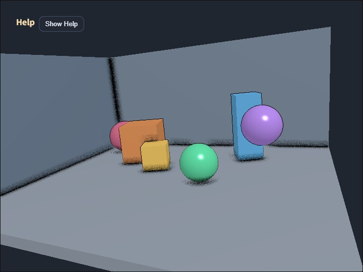

compute_ssao
English | 日本語

概要
SSAO は、画面上で近くに別の面がある場所を暗くし、接地感や角の奥行きを強調するポストプロセスです。このサンプルは normal 用 G-buffer を使わず、scene color と sampleable depth だけから Ambient Occlusion を計算する depth-only 版です。
処理では、まず通常の scene を color と sampleable depth を持つ RenderTarget へ描画します。Compute Shader は depth から view-space 位置を復元し、近傍 pixel の depth 差分から簡易 normal を作ります。その normal を基準に、周辺 16 方向の depth を調べ、床との接触部、壁の角、object 同士の隙間を暗くします。
この方式を使う理由は、MRT や normal texture を追加せず、既存の RenderTarget depth だけで SSAO の基本構造を確認できるためです。入力 resource が少ない一方で、depth 不連続や細い形状では normal 近似が不安定になることがあります。G-buffer normal を使う構成との比較には samples/compute_ssao_gbuffer を参照してください。
実行方法
- 実行ファイルは ./compute_ssao.html です
- WebGPU に対応したブラウザで開き、必要に応じて help panel と CommandPalette と合わせて確認してください
確認ポイント
C で SSAO の ON/OFF、V で composite / scene / ao を切り替えます。ao 表示では、遮蔽係数だけを白黒で確認できるため、暗くなっている場所が合成前に正しいかを見られます。
radius は screen-space の探索半径、strength は暗さ、bias は同じ面を自分自身で遮蔽してしまう誤判定を抑える値です。samples を増やすと方向数が増えて滑らかになりますが、pixel あたりの textureLoad も増えます。
注意点として、depth から復元した normal は物体境界で壊れやすく、細い形状や急な depth 差ではノイズが出る場合があります。このサンプルは core を変更せず、depth-only SSAO の長所と限界を見比べるための実装です。